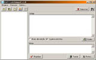
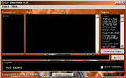
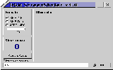
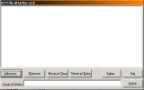
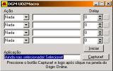

|  | DGM CodeSnippet v1.0 Utilitário para armazenamento e organização de code snippets (pedaços de código-fonte). Necessário Borland Database Engine (BDE) (incluso). Freeware. Para Microsoft Windows. Clique aqui para fazer o Download (931Kb) |
|  | DGM DirectDuke v1.0 Utilitário de chat e jogos de Duke Nukem 3D pela internet. Necessário Duke Nukem 3D instalado, juntamente com o port para Windows Duke3D_w32. Freeware. Para Microsoft Windows. Clique aqui para fazer o Download (583Kb) |
|  | DGM ScreenShoter v1.1 Utilitário Windows para capturar screenshots do seu desktop. Com ele você pode tirar shots em sequência simplesmente apertando a tecla "print screen". Opção para shots automáticos em intervalos de tempo. Novos recursos. Freeware. Para Microsoft Windows. Clique aqui para fazer o Download (257Kb) |
|  | DGM File Attacher v1.0 Utilitário Windows para unir vários arquivos de qualquer tipo em um único arquivo. Inclui código fonte (source-code). Para Microsoft Windows. Clique aqui para fazer o Download (192Kb) |
|  | DGM UO2Macro v1.0 Programa de macro alternativo para seu Ultima Online. Funciona tanto no client.exe como no origin.exe. Freeware. Para Microsoft Windows. Clique aqui para fazer o Download (142Kb) |
Se você encontrou algum link quebrado, por favor entre em contato comigo pelo email
 Obrigado.
Obrigado.